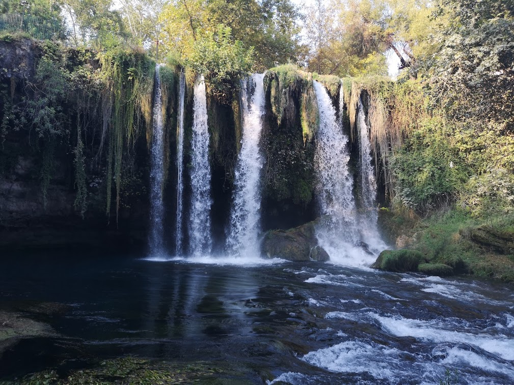

Düden Şelalesi
Düden Şelalesi, Antalya şehir merkezine yaklaşık 10 kilometre uzaklıktadır. Kaynağını Kepez Hidroelektrik Santrali'nden alır ve Düdenbaşı denilen noktada yeryüzüne çıkar. Düden Çayı boyunca iki kola ayrılır. Antalya'ya yaklaşık 7 kilometre uzaklıkta olan kolu Aşağı Düden (ya da Karpuzkaldıran Şelalesi) ve Varsak'a 1 km uzaklıkta olan kolu Yukarı Düden Şelalesi'dir. Bu iki kola ayrılan şelaler Akdeniz'e dökülür.
Aşağı Düden Şelalesi, Lara yakınlarında şehir merkezine 8 kilometre uzaklıktadır. Bu bölümü yaklaşık 40 metrelik falezlerden denize dökülmektedir. Çok yakınında Gençlik Parkı ve Karpuzkaldıran Askeri Tesisleri bulunur.
Yukarı Düden Şelalesi'ne aynı zamanda İskender Şelalesi de denilir. MÖ 334-333 yıllarında Pamfilya'yı fetheden Büyük İskender'in bu bölgeden geçerken atlarını sulattığı söylenmektedir. Yukarı Düden Şelalesi'nin bulunduğu alan 1970 - 1972 yılları arasında Devlet Su İşleri tarafından piknik ve mesire yeri haline getirilmiştir.
